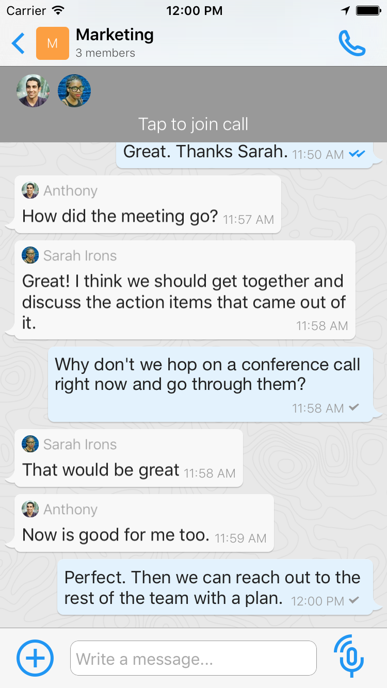
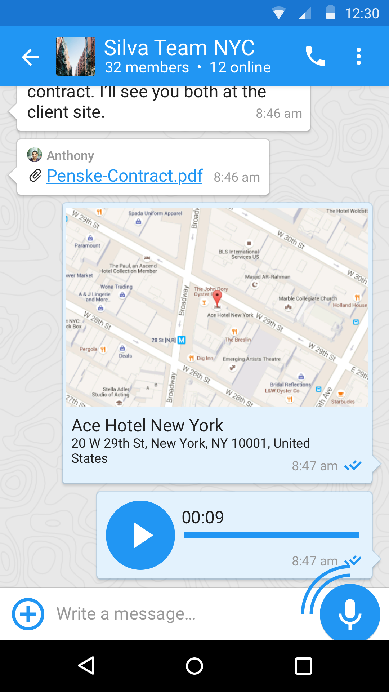
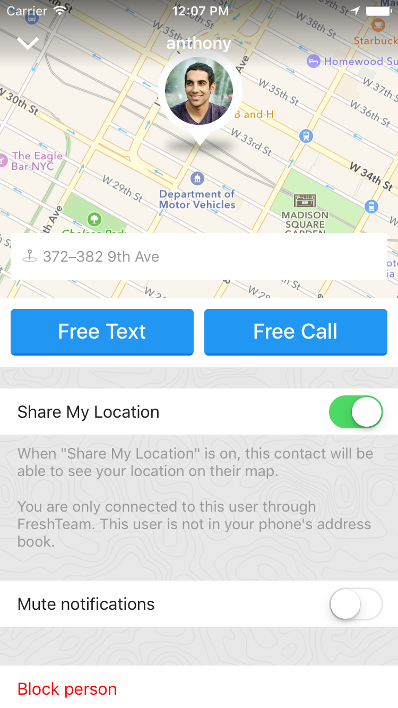

FreshTeam is a team location sharing app with business-grade chat and group calling features. It is available for iOS and Android.
A FreshTeam user can view her team members’ precise location, whether they are on the move by foot or vehicle, whether they are on a call, if their battery is low, and more.
With these tools, FreshTeam users see “Everything they need to know in one look.” Their own status is shared automatically, without having to take out their phone. FreshTeam works by combining the sensors in smartphones with our own software to show where you are and when you’re on the move. It includes privacy controls over whom one shares with and when.
Yes. You specifically authorize each person that sees your location. Nobody sees your location that you do not give permission to.
Can I turn location sharing off?
Yes. In addition, you can set a schedule to turn it on and off automatically, such as during work hours.
Where can I control settings for location sharing?
Go the Maps tab. On iOS, tap Controls in the upper right corner. On Android, tap the i button in the upper right corner. You’ll then see location controls and a list of everyone you are sharing with. Tap on a user’s name to reveal options, such as removing their access to your location.
Can I receive alerts when team members are nearby my office and other locations?
Yes. Users can set Places, such as NY Office or Customer Site 1, to receive alerts when team members arrive. Places also provide a quick view of which employees are at key locations. Places are a Premium feature, part of our $9.99 per month Premium subscription.
HD Audio and Video Calling

What audio and video features are there?
FreshTeam has HD one-to-one audio and video. There is also group calling and walkie-talkie style voice messaging.
How do I start a group call?
Open a FreshTeam group you have created. Tap the microphone button in the upper right corner of your screen. Everyone in the group will instantly receive a notification the call has begun. Tapping the notification will join them to the call. They can also open the group and tap Join. No more conference dial-ins and pins!
What if I don’t want to start a group call with the entire group—just a few of the members?
Create a new group with only the members in question. You can easily remove groups you no longer use from your Groups screen.
How many people can group calls support?
Up to 100 people.
Business-grade 1:1 and Group Chat

Can I share files, as well as photos and videos?
Yes. Tap the + sign inside a chat to begin.
How do I create a FreshTeam group chat?
Open the groups tab. Tap create group. Name it. Add your FreshTeam contacts. That’s it! If you’d like to add someone who is not on FreshTeam, go to your Contacts tab and invite them. Then add them to the Group once they join FreshTeam.
Can I add and remove people to groups after I create them?
Yes! Open the group, and tap the group name to reveal these options.
What does it mean to be a group admin? Can groups have more than one admin?
The creator is an admin. He or she can make other group members admins, too. Admins can rename the group, erase groups, and add or remove people to the group. To make someone an admin, open the group, tap the group name, and then tap on a group member’s name. This will reveal the admin option.
Do new group members see the group’s history, so they can get up to speed?
Yes.
What do the check marks next to messages signify?
They are message read receipts. In one-on-one chat, a single gray check mark signifies the message has been sent successfully. Two gray check marks signify it has been delivered to your colleague’s phone. When those two check marks turn blue, your colleague has seen the message.
In group chat, the same principles hold -- only the checkmarks update once everyone in the group has received and then read the message. We are adding a capability to see which specific members have seen the message soon.
What do the green, orange and red balls next to profile photos signify?
A green ball signifies your colleague is online in FreshTeam right now. An orange ball signifies they have been online within the last 10 minutes. A red ball signifies they are on a FreshTeam call.
On my chat tab, what do the car, feet and battery icons signify?
The car icon signifies your colleague is on the move fast, likely in a vehicle. The feet icon signifies they’re on the move, likely by foot. The battery icon displays when your colleague has a low battery, so you can reach out before their device loses it charge.
Finding Your Colleagues

Can I look up people by their FreshTeam username?
Yes. Tap Add by Username on the chats tab or contacts tab.
Who are the People I May Know?
We make suggestions based on contacts you have in common with your existing FreshTeam contacts. This helps you connect with your team fast.
Do I have a FreshTeam profile, to make it easy for colleagues to find me? Can I edit it?
Yes to both. Tap the More tab and then tap Edit in the upper right corner. You can edit your profile from there. We suggest adding your full name and photo. Only users you authorize see your location and movement status, as well as whether you are online.
Can I block people?
Yes. Open their profile. Scroll to the bottom. Select block.
Permissions
Why does the app prompt me to access my location and then my movement?
We use this data to share your location and transit type – on foot or by car. Only people you authorize can see this information. You can turn sharing off anytime you like.
Why does the app ask to send me notifications?
We use this to send you alerts when a colleague messages or calls you, or starts a group call for a group you are a member of. We also send alerts for Places once you set up a Place.
Why does the app request access to my address book?
FreshTeam securely scans your address book to show you which colleagues already have FreshTeam. This makes it simple to message them. We never share your contact information.
iPhone users: I turned off or did not accept a permission (e.g., location, movement, notifications, microphone). How do I turn it back on?
Open your phone's settings. Scroll down, and then tap FreshTeam. You can change the settings there.
HR Considerations
I am an employer and plan to require that my employees use FreshTeam. What employment law or other information do I need to be aware of?
For the USA, there are three simple points. First, employees should be aware that they are sharing their location. Second, the sharing should be for a legitimate business purpose. And third, the sharing should respect personal time outside of work.
So let employees know before you install FreshTeam, explain how the app helps you and the team better communicate, and highlight how to turn off sharing or set a schedule.
If your employees are required to use FreshTeam on their personal devices (as opposed to devices owned by your company), consider creating a Bring Your Own Device policy. This policy sets expectations about how employees' personal devices may be used for business. It makessense to have this policyif you require employees to install any app on their personal devices, not just FreshTeam.
Finally, the above is not legal or business guidance. You should discuss it with your HR and employment counsel -- particularly as it relates to your home country or state/province requirements.